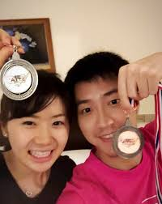

卓球の日本代表である『福原愛』が６日に、自身のブログで『台湾卓球選手 江宏傑』（ジャンホンジェン）と交際している事を発表しました。どうやらリオ五輪後に結婚は確実と言われるほどのようです！
結婚指輪
江さんは会見で、福原さんに送った結婚指輪は「私たちの愛のシンボル」として特注デザインとなっており、「小さな卓球のボールがあしらわれている」と明かした。福原さんは「私も卓球が大好きですし、すごくうれしいです」と喜んでいた。
福原愛
福原 愛（ふくはら あい、1988年11月1日 - ）は、日本の卓球選手。宮城県仙台市生まれ、身長155cm、血液型B型[1]。全日本空輸（ANA）に所属。 史上初の全日本グランドスラム達成者であり、五輪2大会連続のメダリスト。ITTF世界ランキング最高位は4位（2015年10月）。日本オリンピック委員会・選手強化キャンペーン・シンボルアスリート制度適用選手。
江宏傑
1989年2月22日、台湾新竹市出身。新竹市北区富国民小学、国立台南第一高級中学、長栄大学、中国文化大学卒業[1]。合作金庫銀行卓球隊所属[2]。
- 福原愛を知っていますか？
- はい
- 江選手を知っていますか？
- はい
- お二人はお似合いだと思いますか？
- はい、そう思います。